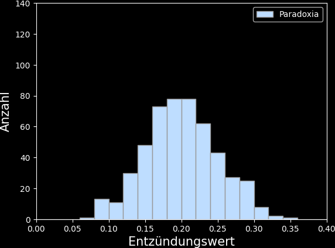
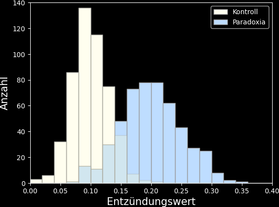
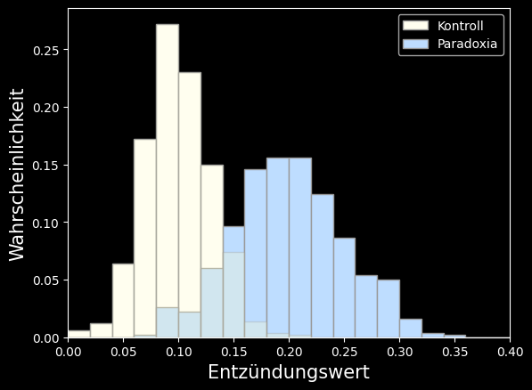

Die meisten Variablen menschlicher Psychologie sind keine “natürlichen Größen”, die sich mit konventionellen Instrumenten (z.B. Meterstab) messen ließen – sie sind latent.
In der Regel basieren diese Variablen auf bestimmten Vorstellungen oder Theorien über die Psyche (Optimismus, Ängstlichkeit, Intelligenz, usw.) – man spricht hier auch von Konstrukten.
Um messbar zu werden, müssen Konstrukte operationalisiert werden, d.h. es müssen manifeste messbare Variablen definiert werden, die – ggf. in Kombination (z.B. Fragebogen) – Rückschluss auf das Konstrukt erlauben.
Eine Skala bezeichnet in der Psychologie die systematische Zuordnung der Ausprägungen eines empirischen Merkmals (z.B. Depressivität, Konzentrationsfähigkeit, Stresslevel) zu Zahlenwerten oder Kategorien.
Diese Zuordnung erfolgt entweder mit einem Messinstrument oder einer Messvorschrift
Messinstrumente: Test zur Bestimmung der Cortisolkonzentration im Speichel, Eyetracking-Gerät, EEG-Gerät, …
Beispiele Messvorschriften: Fragebogen, strukturiertes Interview, psychologischer Test
Kurz gesagt: die Messung einer Variablen erfordert eine Skala
Skalen werden in verschiedene Skalenniveaus unterteilt, deren Aussagekraft sich unterscheidet:
Nominalskala
Ordinalskala
Intervallskala
Verhältnisskala
Skalenniveaus
Kategoriale / qualitative Skalenniveaus
Nominalskala
Verschiedene Ausprägungen des Merkmals entsprechen qualitativen (zumeist verbalen) Kategorien
Wie Nominalskala, aber die Kategorien lassen sich in eine natürliche Reihenfolge bringen; daher häufig mit Zahlen benannt, diese Zahlen stellen aber kein “Ausmaß” dar
Likert-Rating (z.B. Skala von 1 bis 10), Bildungsstand (Mittelschule, Abitur, Studium, Doktor, …)
Skalenniveaus werden manchmal mit den Etagen eines Hauses verglichen, wobei die Nominalskala die niedrigste Etage darstellt. In der Abbildung wird zusätzlich zwischen Intervall- und Absolutskala unterschieden. Im Gegensatz zur Verhältnisskala, bei der die Einheiten häufig frei gewählt werden können (Meter oder Zentimeter, Euro oder Cent, ..), basiert die Absolutskala auf der natürlichen Einheit “Anzahl” (Anzahl Personen, Anzahl richtiger Antworten, usw.). Davon abgesehen sind Verhältnis- und Absolutskala identisch und die genannte Unterscheidung ist ohne weitere praktische Relevanz.
Achtung bei Nominalskalen: zum Teil werden den Ausprägungen einer nominalskalierten Variable Zahlen zugeordnet (die sog. Kodierung – Beispiel Haarfarbe: “hellblond” = 1, “dunkelblond” = 2, “hellbraun” = 3, usw.). Diese Kodierung ändert aber nichts an den Eigenschaften der Variable, insbesondere dürfen nominalskalierte Variablen auch nach der Kodierung nicht miteinander verechnet werden (d.h. keine Addition, kein Verhältnis, kein Mittelwert, usw.).
Skalenniveaus: Zusammenfassung
Was ist eine Variable?
Die Grundannahme psychologischer Forschung ist, dass sich Erleben und Verhalten durch bestimmte Merkmale messen und beschreiben lässt
Diese Merkmale sind in aller Regel variabel, sowohl innerhalb eines Individuums (intraindividuell), als auch zwischen Individuen (interindividuell)
Variables Merkmal = Variable
Beispiele
Intraindividuelle Variable (unterschiedliche Werte bei einer Person über die Zeit): Müdigkeit einer Person über den Tagesverlauf; Hippocampusvolumen einer Person zu verschiedenen Jahreszeiten
Interindividuelle Variable (unterschiedliche Werte bei verschiedenen Personen): Alter verschiedener Personen; Intelligenzquotient verschiedener Personen
Variablentypen
Variablen können verschiedene Arten von Ausprägungen aufweisen:
Typ
Quali/Quanti
Definition
Skala
Beispiele
Dichotom
Qualitativ (=Kategorien)
Zwei mögliche Ausprägungen
Nominal
schwanger/nicht schwanger, Raucher/Nichtraucher
Kategorial
Qualitativ (=Kategorien)
Eine begrenzte Zahl von Ausprägungen
Nominal, Ordinal
Haarfarbe, Schulabschluss, Musikgeschmack
Diskret
Quantitativ (=Zahlenwerte)
Gestufte Ausprägungen, die sich der Größe nach ordnen lassen
Ordinal, Intervall, Verhältnis
Anzahl von Geschwistern, Schulnoten
Kontinuierlich
Quantitativ (=Zahlenwerte)
Stufenlose Ausprägung
Intervall, Verhältnis
Alter, Intelligenz
NB: Die Art der Ausprägung einer Variable ist eine wichtige Information für die Auswahl einer geeigneten deskriptiven oder inferentiellen statistischen Methode
Nicht direkt messbar oder beobachtbar – die Ausprägungen der Variablen müssen erschlossen werden
Intelligenz, Einstellung gegenüber Minderheiten, Wohlbefinden
In der Psychologie basieren viele Variablen auf theoretischen Konstrukten (wie Intelligenz) und können daher nicht direkt beobachtet, abgefragt oder gemessen werden 😒.
Latente Variable sind daher eher die Regel als die Ausnahme.
Abhängige und unabhängige Variablen
In vielen Studien wird eine Variable in verschiedenen Studien- oder Experimentalbedingungen gemessen.
Um Studierende etwas zu verwirren (😉) werden auch die Studien- bzw. Experimentalbedingungen als Variablen bezeichnet, genauer als unabhängige Variablen. Sie sind unabhängig, weil sie i.d.R. von den Durchführenden einer Studie frei bestimmt werden.
Die tatsächlich gemessene Variable wird demgegenüber als abhängige Variable bezeichnet, da die Werte der Variable in Abhängigkeit von der jeweiligen Studien- btw. Experimentalbedingung unterschiedlich ausfallen können.
Beispiele
Unabhängige Variable
Gruppenzugehörigkeit (z.B. Patienten vs. Kontrollen), Experimentalbedingungen (z.B. mit versus ohne Aufmerksamkeit, Messzeitpunkt 1 versus Messzeitpunkt 2)
Abhängige Variable
Herzrate, Fragebogenscore, Anzahl von Fehlern in einer Aufgabe
Ein Experiment ist eine Überführung der Forschungsfrage in eine objektivierbare und quantifizierbare Untersuchung
Im Zentrum des Experimentes steht die unabhängige Variable, durch die das Experiment in zwei oder mehr experimentelle Bedingungen unterteilt wird.
Ein Experiment ist eine systematische Veränderung in einer unabhängigen Variable (Treatment / Manipulation), mit dem Ziel, ursächlich eine Veränderung in der abhängigen Variable (d.h. der gemessenen Variable) herbeizuführen.
… was heißt das konkret?
Beispiel
Was schmeck besser: Coca-Cola oder Pepsi Cola?
Experiment: Blindverkostung durch N Versuchspersonen, die jeweils Coca-Cola und Pepsi Cola in einem neutralen Gefäß probieren und auf einer Skala von 1 bis 10 bewerten.
Abhängige Variable: Bewertung durch die Versuchspersonen (10 Werte, 1-10; diskret)
Im genannten Beispiel handelt sich um ein Experiment mit within-subject Design, da jede Versuchsperson alle (hier zwei) Bedingungen der unabhängigen Variable durchläuft.
Wie sähe das Experiment in einem between-subject Design aus?
Within- und between-subject Design
Design
Definition
Beispiel
Within-subject
Alle Versuchspersonen durchlaufen alle Experimentalbedingungen
Jede VP probiert Cola und Pepsi
Between-subject
Verschiedene Versuchspersonengruppen durchlaufen jeweils nur eine Experimentalbedingung
Gruppe 1 probiert Cola, Gruppe 2 probiert Pepsi
Mixed
Mindestens eine Experimentalbedingung wird innerhalb der Teilnehmer variiert (within-subject) und eine Experimentalbedingung zwischen den Teilnehmern variiert (between-subject)
Gruppe 1 probiert Cola mit und ohne Eis, Gruppe 2 probiert Pepsi mit und ohne Eis
Ein synonymer Begriff für das within-subject Design ist Design mit Messwiederholung (engl. repeated measures).
Messwiederholung bezeichnet, exakt wie das within-subject Design, die geplante Durchführung mehrerer Experimentalbedingungen an einer VP.
Messwiederholung ist ein recht unglücklich gewählter und verwirrender Begriff:
Ursprünglich bezeichneter er vermutlich allein die Messung einer VP zu verschiedenen Zeitpunkten (z.B. Test vor und nach einer Intervention). Hier ergibt der Begriff “Wiederholung” Sinn. In der heutigen Anwendung bezieht sich der Begriff Messwiederholung allerdings nicht nur auf den within-subject Faktor “Zeit” (mit verschiedenen Messzeitpunkten als within-subject Experimentalbedingungen), sondern auf jede Art von within-subject Faktor (z.B. mit und ohne Eis im Cola-Beispiel). “Wiederholung” verwirrt in diesem Zusammenhang, da unterschiedliche Experimentalbedingungen getestet werden (wenn auch in derselben Person).
Experimente beinhalten häufig eine tatsächliche Art von Messwiederholung, nämlich die wiederholte Durchführung ein und derselben Experimentalbedingung (auch “Trial” genannt), um durch Mittelwertbildung die Präzision der Messung zu erhöhen. Hier wäre der Begriff Messwiederholung besser angebracht.
Aus dem Begriff selbst wird nicht deutlich, dass eine Messung tatsächlich innerhalb derselben VP wiederholt wird – der Begriff within-subject ist hier präziser.
Der Ausdruck Messwiederholung oder Repeated Measures ist allerdings so verbreitet (in wissenschaftlichen Artikeln, Statistik-Software usw.), dass er hier Erwähnung finden muss.
Beispiel between-subject Design: das Asch-Experiment
Konstrukt: gruppenkonformes Verhalten
Experiment: die Versuchsperson (VP) musste auswählen, welche von drei Vergleichlinien dieselbe Länge wie eine Referenzlinie hat. Außer der VP waren noch weitere vorgebliche VPen anwesend (in Wirklichkeit Vertraute der Experimentalleitung – die “Konfidenten”).
Unabhängige Variable: zwei Gruppen (Gruppe A: Konfidenten geben richtige Antworten; Gruppe B: Konfidenten geben in 2/3 der Fälle eine falsche Antwort)
Abhängige Variable: Prozentzahl der Fehler der VP
Ergebnis:
1% Fehlentscheidungen in Kontrollgruppe
37% Fehlentscheidungen in der Experimentalgruppe
⟶ Die Operationalsierung des Konstruktes “gruppenkonformes Verhalten” entspricht hier also einem experimentellen Kontrast:
Im Gegensatz zum Experiment(*) können in Beobachtungsstudien keine kausalen Schlüsse gezogen werden
Warum? Jeder Unterschied zwischen Gruppen oder Zusammenhang zweier Variablen zwischen Personen kann immer auch durch (bekannte oder unbekannte) Störvariablen verursacht sein.
→ Mehr dazu im Modul Forschungsmethoden!
(*)Angenommen wird hier ein “echtes Experiment”, d.h. mit randomisierter Zuordnung einer Stichprobe zu Experimentalbedingungen (das sog. randomisiert-kontrollierte Experiment)
Ok, Task Force, zurück zur ersten Hypothese:
Hypothese 1: Paradoxia wird durch eine virale Infektion verursacht. Die Blutproben von Menschen mit Paradoxia sollten daher eine höhere Menge von Entzündungsmarkern aufweisen.
Warum wäre zur Überprüfung dieser Hypothese ein echtes Experiment ethisch schwierig? Welche Probleme weist eine reine Beobachtungsstudie (Vergleich der Entzündungsmarker von Paradoxikern und Kontrollen) auf?
Figure 4.1: Verteilung der Haarfarbe bei Paradoxikern und Kontrollen in Form eines Häufigkeitsdiagramms. Die Form der Darstellung wird auch als Balken- oder Säulendiagramm bezeichnet.
Darstellung quantitativer Daten: das Histogramm
Erinnerung: quantitative Variablen sind Zahlenwerte (diskret oder kontinuierlich)
Beispiele: Körpergröße (z.B. in cm), durchschnittliches Zuspätkommen einer Kohorte in Statistik 1 (z.B. in sec), emotionaler Intelligenzquotient (einheitslos)
Die wichtigste Darstellungsform quantitativer Daten ist das Histogramm:
Die Daten der ersten Beobachtungsstudie zu Paradoxia sind frisch eingetroffen!
Table 1. Results.
id
group
inflammatory value (0-1)
1
control
0.12
2
control
0.03
…
…
…
500
control
0.19
501
paradoxia
0.28
502
paradoxia
0.15
…
…
…
1000
paradoxia
0.19
Hier ist das Histogramm der Entzündungswerte der Paradoxiker:

Was ist die Intervallgröße? Überschlagen Sie: passt das Histogramm zur angegeben Stichprobe von N=500 Paradoxikern? Was schätzen Sie ist der Mittelwert der Entzündungsmarker?
Und hier der Vergleich mit der Kontrollgruppe:

Diese erste Studie erbringt also tatsächlich Evidenz für einen erhöhten Entzüdungswert bei Paradoxikern, und favorisiert damit die Hypothese 1 der Task Force!
Statt der Anzahl (absolute Häufigkeit) kann auch die Wahrscheinlichkeit (relative Häufigkeit) dargestellt werden:

Jeder Wert in dieser Abbildung gibt also die Wahrscheinlichkeit an, dass ein Entzündungswert im Intervall des jeweiligen Balkens liegt.
Während sich die Balken eines Histogramms mit absoluter Häufigkeit (Anzahl) zur Stichprobengröße aufaddieren, addieren sie sich beim Histogramm mit relativer Häufigkeit (Wahrscheinlichkeit) zu 1!
Grundgesamtheit und Stichprobe
Grundgesamtheit (auch Population) bezeichnet die Gesamtheit der Personen, für die wir uns in einer wissenschaftlichen Studie interessieren (z.B. Personen mit einer bestimmten Erkrankung, Kinder zwischen 3 und 6, die gesamte Menschheit)
In den meisten Fällen ist es nicht möglich alle Mitglieder der Grundgesamtheit zu untersuchen (Vollerhebung) – wir müssen daher eine Stichprobe ziehen.
Die Annahme ist, dass die Stichprobe ein möglichst repräsentatives Abbild der Grundgesamtheit ist und sich Ergebnisse in der Stichprobe auf die Grundgesamtheit übertragen lassen.
Eine Zufallsvariable ist eine Variable, die zu einem gewissen Grad vom Zufall (oder uns zufällig erscheinenden Faktoren) abhängt.
In der Psychologie kommt “Zufall” an zwei Stellen ins Spiel:
Messfehler (unbekannte, uns zufällig erscheinende, Einflüsse auf die Genauigkeit der Messung)
Beim zufälligen Ziehen einer Stichprobe aus der Grundgesamtheit
Ein wichtiger Aspekt von Zufallsvariablen ist, dass die Zufälligkeit mathematisch beschrieben werden kann – durch Wahrscheinlichkeitsverteilungen (wir kommen darauf später noch einmal zurück)
Beispiel: jeder Wurf eines Würfels ist zufällig, aber wir können sagen, dass die Wahrscheinlichkeit jeder Zahl exakt 1/6 ist.
Praktisch gesehen, sind nahezu alle Variablen in der Psychologie Zufallsvariablen, daher meint “Variable” in aller Regel “Zufallsvariable”
Die Ausnahme der Regel wäre der seltene Fall, dass eine Variable für alle Personen der Grundgesamtkeit bekannt ist und ihre Messung keinem Messfehler unterliegt (z.B. Geburtsjahr aller amerikanischen Präsidenten bis zum Jahr 2023).
Zufallsvariablen werden mit großen Lettern bezeichnet, i.d.R. \(X\) (oder \(Y\)/\(Z\) falls zwei/drei Zufallsvariablen betrachtet werden).
Einzelne Beobachtungen einer Zufallsvariable (z.B. der gemessene IQ von bestimmten Personen) werden mit kleinen Lettern bezeichnet (\(x_i\), \(y_i\), \(z_i\)), wobei \(i\) der Durchnummerierung dient.
Der Vektor \(\mathbf{x}\) (beachte die Fettschrift) bezeichnet die Gesamtheit der Beobachtungen \(x_1 .. x_N\)
Beispiel: die Zufallsvariable \(X\) bezeichnet in der Tabelle den in einer Stichprobe gemessenen Intelligenzquotienten